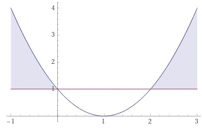

Aufgabe 37 Bestimmen Sie die Lösungsmenge der Ungleichung für x ∈ ℝ: (x - 1)² > 1 (x - 1)² > 1 |ⱱ |x -1| > 1 Fallunterscheidung: 1. Fall |x - 1| = x - 1 für x - 1 ≥ 0 --> x ≥ 1 x - 1 > 1 |+1 x > 2 L1 = x ≥ 1 ∩ x > 2 = x > 2 2. Fall |x - 1| = -(x - 1) für x - 1 < 0 --> x < 1 -(x - 1) > 1 -x + 1 < 1 |+x - 1 x < 0 L2 = x < 1 ∩ x < 0 = x < 0 L = L1 ∪ L2 = x > 2 ∪ x < 0 L = x > 2 ∪ x < 0 